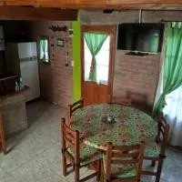

Tres unidades · hasta 4 personas
Cabañas Alpinas
Dos plantas para disfrutar con espacio: dormitorio matrimonial con aire acondicionado y balcón en planta alta, más living comedor y cocina en planta baja.
- Ideales para parejas
- Capacidad flexible para familias con chicos
- Parrilla y estacionamiento individual
